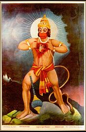
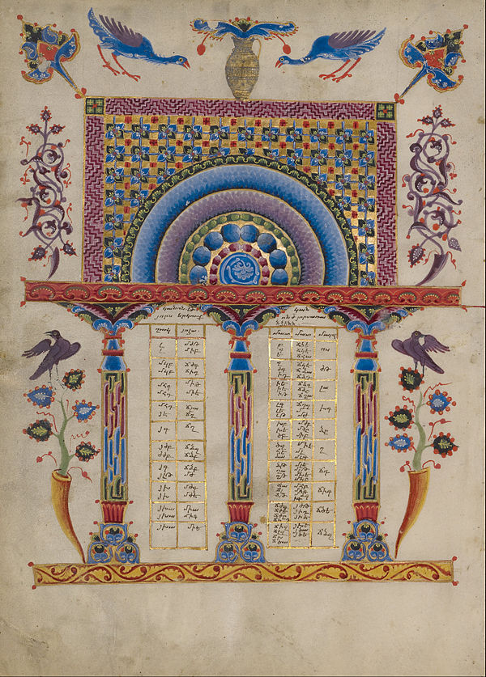

Final Fantasy Type-0 is a Japanese video game produced by Square Enix in 2011 for the PlayStation Portable (PSP). It is an action role-playing game where players take the role of Class Zero, a group of fourteen students skilled in magic who are recruited by their superiors into a war between the four nations of Orience. The players also engage in large-scale strategy-based battles on the world map, and have access to a multiplayer option during story missions and side quests. Developed by the same staff as Crisis Core: Final Fantasy VII, Type-0 was designed as a departure from the traditions of the Final Fantasy series with its action-based gameplay and dark storyline. It was originally planned for both PSP and mobile, but the mobile version was cancelled in 2008. The game met with commercial success in Japan, and favorable reviews both in Japan and overseas. Plans for international versions were halted due to the flagging PSP market in the Western world. The first non-Japanese version of Type-0 was a fan translation into English in 2014. A high-definition remaster was released worldwide in 2015. (Full article...)
Recently featured: Hurricane Charley (1986) California State Route 78 Sarcoscypha coccinea
Archive By email More featured articles...

Did you know...
- ... that the Rama Rahasya Upanishad (Rama in the heart of Hanuman pictured) presents a goddess as the cause of creation, a god as the soul, and both together as the source of all existence?
- ... that Finis Alonzo Crutchfield, Jr. is credited with bringing the televangelist Oral Roberts into the United Methodist Church in 1968?
- ... that Operation Phalat was a preventative strike into Laos by Thai forces in 1971 to contain communist influence in the region?
- ... that for his ordination, Georg Weissel wrote the text of the hymn "Such, wer da will, ein ander Ziel" to his friend's melody for a wedding song?
- ... that Moisés Félix Dagdug Lützow, owner of a radio station, served as the Secretary of the Radio, Television and Film Committee of the Mexican Chamber of Deputies?
- ... that the Kankakee mallow is known from a single 700 m (0.4 mi) long island in the state of Illinois?
- ... that Frank Sprogell said being a golf pro is not really a job?
Recently improved articles Start a new article Nominate an article

An example of an Armenian illuminated manuscript, the Canon Table Page illuminated by Toros Roslin. The earliest surviving examples of this tradition of illuminated manuscript, which draws on both Medieval Armenian art and the Byzantine tradition, date from the Golden Age of Armenian art and literature in the 5th century. This example is more recent, dating to 1256.
Illumination: Toros Roslin
Recently featured: Platoon sergeant, Man sweeping volcanic, ash Homme au bain
Archive More featured pictures...